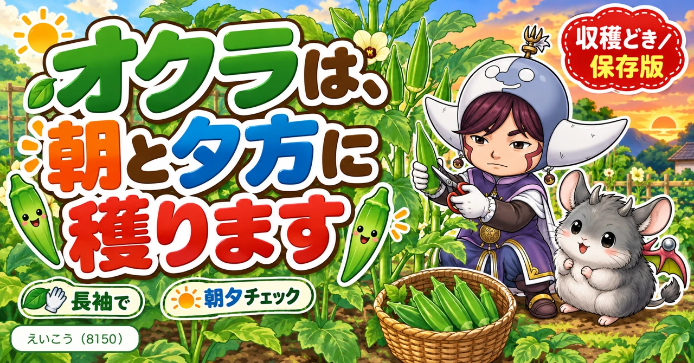
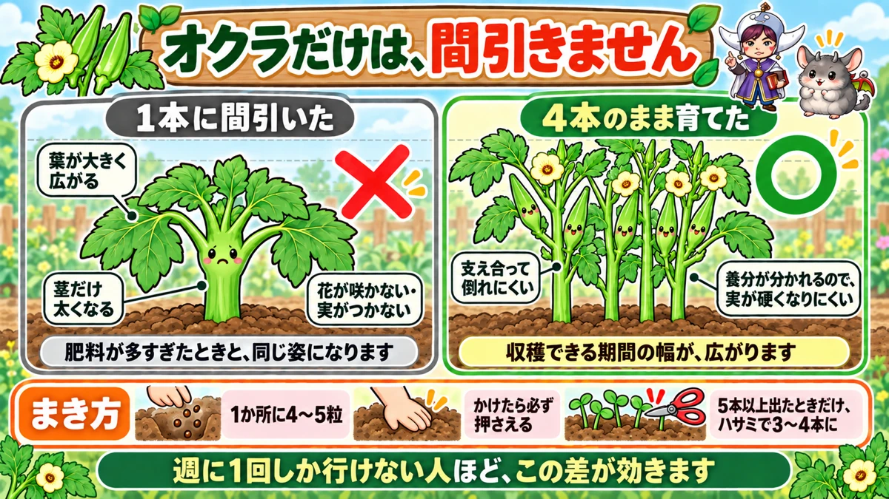
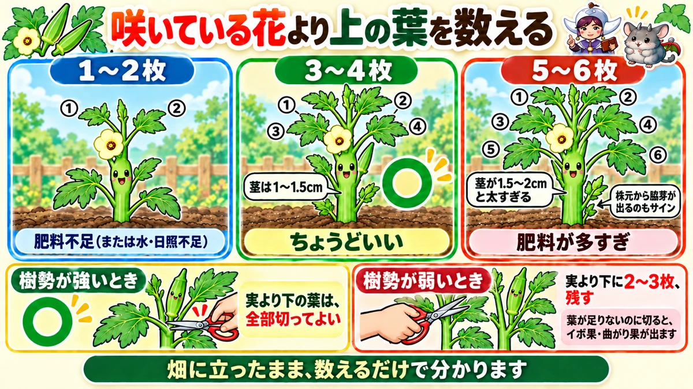
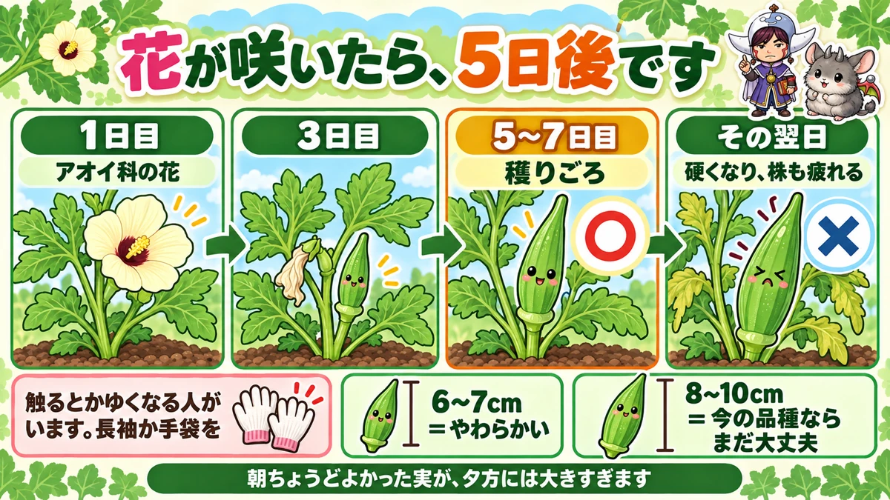
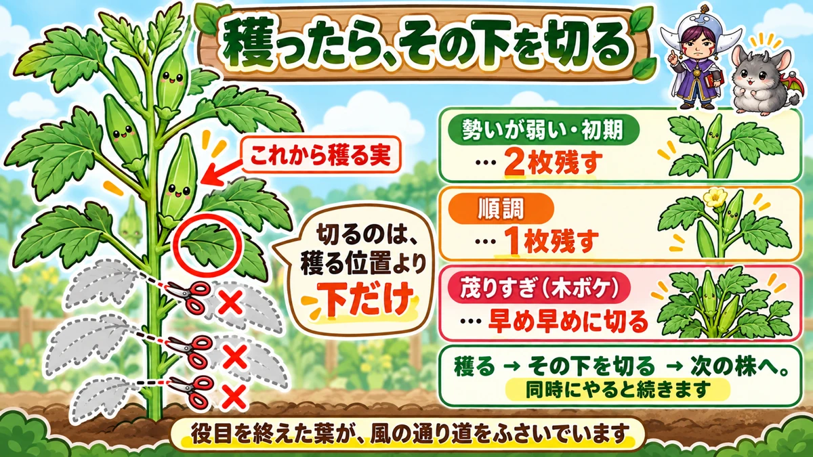
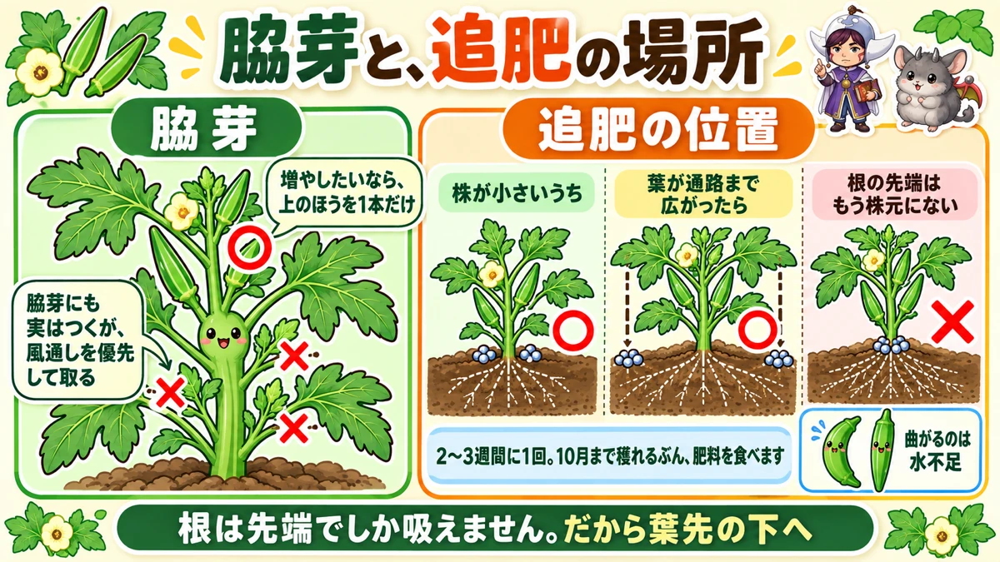

オクラ栽培の調べもの帳｜種まき・本数・水やりと硬い実の対処

どうも、8150（えいこう）です🌱 家庭菜園歴8年、理科の教員免許を持っていて、有機・無農薬で野菜を育てています。
📖 この記事の目次
この記事で分かること
- オクラは『畑に行ける頻度』『種からか苗からか』『何本まとめて育てるか』を先に決めると、作業がつながります。
- 春のスタートは日付だけで決めません。発芽に必要な暖かさと、梅雨までに苗を育てたい事情の両方を見ます。
- 一つの植え場所に複数本を残す育て方があります。残す本数は2〜6本の説明があり、まく粒数とは別に考えます。
- 実がつく前と、収穫が続く真夏では、水と肥料の必要量が変わります。葉と土を見て加減します。
- 硬い実、曲がった実、巻いた葉は、それぞれ確認する場所が違います。症状から次の作業を選べます。
- 収穫を終えたら根も確認。来年の植え場所と、秋に植える野菜まで考えて一区切りです。
オクラで困りやすいのは、「まだ小さいから明日でええかな」と残した実が、次に見たらすっかり大きくなっていることです。見た目は立派。でも、食べたい柔らかさとは別なんですよね。
このページでは、種まきから収穫終了までを時期の順にまとめます。最初から読むなら『早見』と『作業の手順』へ。すでに育てていて困っているみなさんは、『失敗の見分け方』から確認してください。全部を覚える必要はありません。目の前のオクラに合わせて、必要な項目を拾えば大丈夫です☺️
早見：オクラの育て方（ひと目で分かる数字）
時期・温度・植える間隔
- 種まき：暖かさを確保して4月に始める説明と、一般地の直まきは5月の連休後にする説明があります。4月末〜5月初旬を目安に、最低気温を確認する考え方もあります。
- 地域による調整：春の冷え込みが長い地域では、全国共通の日付より種袋の地域別の適期を優先。早く育てたい場合は、暖かい場所で苗を育てる方法と分けて考えます。
- 苗を植える時期：夜の冷え込みが残るうちは慎重に。材料には全国共通の定植日や育苗日数はありません。小さな苗の根を傷めずに植えられる状態と、外の温度を合わせます。
- 発芽しやすい温度：25〜30℃。育つのに適した温度は20〜30℃という目安があります。夜は15℃を下回らないようにする説明もあります。
- 寒さを見る別の目安：最低気温が10℃を超えてから始める説明があります。ただし、10℃と発芽適温25〜30℃は別の数字です。「夜が10℃なら発芽が速い」という意味ではありません。
- 発芽まで：条件が整えば約5日〜1週間。寒さや土の乾きで遅れるので、この日数を過ぎたことだけで種の不良と決めません。
- 種を埋める深さ：約1cm。覆った土を軽く押して、種と土をなじませます。指の長さには個人差があるので、深さそのものを意識してください。
- 一つの場所にまく数：3〜8粒（説明によって違う）。最終的に残したい本数と、発芽しない種が出る可能性を含めて選びます。
- 残す本数：2本、3〜4本、4〜5本、5〜6本の栽培例があります。一つの場所で複数本を育てる方法が多く、まいた粒数を全部残す決まりではありません。
- 植え場所どうしの間隔：30〜45cm前後の例があり、虫を調べやすくする目的で40〜60cmに広げる説明もあります。一つの場所の本数とセットで確認します。
- うね幅：ネタ帳には共通の指定がありません。植える列数、葉の広がり、収穫するときに手を入れる通路から決めます。株間の数字を、そのままうね幅に置き換えないでください。
肥料・収穫・次の作付け
- 元肥を入れる時期：2月後半〜3月中旬に準備する例や、3月中旬に入れて2〜3週間おく例があります。肥料分が残る畑では、元肥を足さずに始める方法もあります。
- 元肥の量：土に残る肥料分と使う肥料が違うため、一律の量にはできません。共通する注意点は、窒素を多くして葉ばかり育つ状態にしないことです。
- 追肥を始める区切り：最初の花が開くころ、または収穫を始めるころ。苗が小さい時期から、収穫期と同じ量を続けて与える計画にはしません。
- 追肥の間隔：2〜4週間程度、または月1回（説明によって違う）。育ちがよいときは3〜4週間、弱いときは2週間という調整例もあります。
- 肥料の効き具合を見る葉数：開いている花より上の、広がった葉が3〜4枚なら目安の範囲。1〜2枚なら弱り、5〜6枚なら勢いが強すぎる可能性を見ます。
- 収穫までの日数：種まきから初収穫までの統一した日数は、材料にはありません。花が開いてからは3〜7日という幅があり、実の伸び方と柔らかさを見て収穫します。
- 角オクラの収穫サイズ：7〜8cmを目安にする説明が多く、8〜10cmで収穫する栽培例もあります。品種や気温で違うので、長さだけで食べごろを決めません。
- 丸オクラの収穫サイズ：12〜13cmでも柔らかい例があります。丸い形なら何cmでも大丈夫、という意味ではありません。使う種袋の収穫目安も確認します。
- 実の伸び：暑い時期は1日に約2cm、または数cmという説明があります。毎日同じ速さではありませんが、数日空けると食べごろを逃しやすい野菜です。
- 収穫を見回る回数：収穫初期は1日1回、盛んに実が育つ時期は朝と夕方の2回が一つの目安。畑に行けない予定がある日は、小さめの実も収穫する判断が役立ちます。
- 収穫期間：7〜8月が中心。地域や生育によって10月上旬〜11月まで続く例があります。秋の次作を優先して9月末に片づける計画も選べます。
- 連作の間隔：輪作は3年を目安にする説明があります。根にこぶが出た場所では、年数だけで安心せず、植え場所と次に育てる野菜を見直します。
数字を使う前のチェック
- 種袋の品種、地域別の適期、収穫サイズを読んだ
- 『まく粒数』と『育てる本数』を分けた
- 畑に行ける頻度に合わせて、角か丸かを選んだ
- 元肥を追加する前に、前の野菜に与えた肥料を確認した
- 収穫開始後は、水と肥料の管理をもう一度見直す予定にした
早見には幅のある数字が並びます。なんか決めにくいですよね。でも、平均値を一つ作るより、その幅が生まれる条件を知るほうが畑では役立ちます。例えば、2本立ちの株間と6本立ちの株間を混ぜない。ここだけでも、計画の無理が減ります。
作業の手順（時期の順）
1．種を買う前に、収穫に通える日を考える
- 実がつく時期に、畑や鉢を毎日見られるか確認します。
- こまめに採れるなら角オクラ、訪問の間隔が空きやすいなら丸オクラを候補にします。
- 種袋で収穫する長さと栽培時期を確認します。断面の形だけで判断を終えません。
- 植える場所の数を決めます。一つの場所から複数の株が育つので、『植え場所が少ない＝実も少ない』とは限りません。
角オクラは断面が星のように見えるタイプ、丸オクラは角が目立たないタイプです。丸いほうは、伸びても柔らかさが残りやすい性質が家庭菜園の助けになります。ただ、収穫を何日も忘れてよいわけではありません。丸いから放置OK、となるとオクラも困ります(笑)。
品種選びでは、味を重視するのか、採り遅れを減らしたいのかを分けてください。角オクラをすすめる説明もあるので、丸だけが正解ではありません。赤いタイプを選ぶなら、調理後も赤い色が残ると思わず、食べ方まで考えて選ぶと楽しめます。
2．春の土づくりは、深さと排水から始める
- 前に育てた野菜と、肥料を入れた履歴を確認します。
- 土を縦に深くほぐし、根が下へ伸びる場所を用意します。
- 雨のあとに水が残る位置を確認し、植える場所と水の逃げ道を決めます。
- 元肥を使う場合は、土に残っている肥料分を踏まえて量を決めます。
- 葉が広がる範囲と、収穫のときに歩く通路を確保します。
オクラは、下へ伸びる太い根を持つ野菜です。土の表面だけを柔らかくしても、その下が硬ければ根の進む場所が足りません。耕すときは表面の仕上がりだけでなく、道具を入れたときに深いところが硬くないかを見ます。
肥料が残る畑では、元肥なしで育て始め、実が採れるころに追加を考える方法があります。一方、栄養の少ない場所まで何も入れないと決める必要はありません。『元肥を少なめにする』と『収穫終了まで肥料を与えない』は別の話です。
使う肥料が違えば、同じ一握りでも含まれる成分は変わります。この記事では複数の肥料量を一つに混ぜません。購入した肥料の表示を確認し、最初から窒素を多く入れる計画を避けます。
3．直まきか育苗かを決める
- 外の土が十分に暖まる時期まで待てるなら、畑へ直接まく方法を選びます。
- 4月から始めたいのに外が冷えるなら、暖かい場所で苗を育てる方法を検討します。
- 保温して早まきする場合は、夜の冷え込みと遅霜を確認します。
- 苗を育てる場所と植え付け場所が決まってから、種まきの日を選びます。
早まきは、梅雨や強い暑さが来る前に苗をある程度育てるための方法です。早ければ早いほど得、という意味ではありません。寒い土へ種を入れて発芽が止まると、カレンダー上は早くても実際の生育は進みません。
直まきには、植え替えで根を傷める機会が少ない利点があります。育苗には、まだ冷える時期に暖かい環境で始められる利点があります。『どちらが上か』より、自分の場所で温度と根を守れるほうを選ぶと考えやすいです。
4．種をまいて、土と種を密着させる
- 一つの植え場所で最終的に何本育てるか決めます。
- 必要な本数と発芽の失敗を見込み、3〜8粒の説明から自分の方法に合う粒数を選びます。
- 種を約1cmの深さに入れ、土を戻します。
- 戻した土を指などで軽く押して、種の周囲の大きな隙間を減らします。
- 種が動くほど強く水を当てず、まいた場所に水を含ませます。
- 日付と粒数を記録して、芽が出た本数を後から確認します。
この『土を押さえる』作業は地味ですが、飛ばさないでください。ふわふわの土の中に種が置かれただけだと、水をかけたときに位置がずれることがあります。マルチを使う栽培では、種がシートの下へ移動してしまうと、まいた穴から芽が出てこない原因になります。
種を一晩水につける方法もあります。種皮が硬いので吸水を助けたい、という考え方です。ただ、浸水をしない栽培例もあります。つけたかどうかだけでなく、まいたあとの土の湿りと温度を確保できたかを見ます。
保温に不織布を使う方法では、春の冷え込みを避ける目的を意識します。覆えばどんな寒さでも大丈夫とは考えず、天気予報と中の生育を確認してください。芽が出たあとも、虫がいないか見る作業は続きます。
5．発芽後の本数を確認し、不足は早めに補う
- 発芽したら、一つの場所から何本出たか数えます。
- 3〜4本など、予定した複数本がそろっていれば、機械的に1本へ減らしません。
- 本数が少なすぎる場所は、周囲の苗が小さいうちにまき直しを検討します。
- 多すぎる株を減らす場合は、残す株の根を引っ張らないようハサミで地際を切ります。
- 生育が進んだ場所へ、あとから小苗を足す計画は避けます。
『種は8粒』『残すのは5〜6本』という説明は、別々の段階の数字です。8粒全部が同じように育つ前提ではなく、発芽や初期生育で本数が減ることを見込んでいます。逆に、2本立ちを選ぶ方法へ、8粒まきの話だけを足すと、あとで何本残すのか分からなくなります。
複数本立ちは、栄養や水の取り合いで一株あたりの勢いを調整する方法として使われます。実が急に大きくなりすぎることを抑えたい家庭菜園とも相性があります。ただ、密集させるだけで水不足や肥料不足が解消するわけではありません。

この図は3〜5本を残す育て方の見本です。2本立ちの栽培例もあるため、図の本数をすべての条件に当てはめる決まりにはしません。
6．買った苗は、小さいうちに根を傷めず植える
- 苗を選ぶときは、大きさだけでなく、茎がひょろ長く伸びていないかを見ます。
- 大きくなりすぎた苗より、小さめで元気な苗を候補にします。
- 植え穴を用意し、水を入れてから植え付けます。
- 苗の根を無理に分けたり、引きちぎったりしないように扱います。
- 周囲に土を寄せ、根の周りに隙間が残らないよう押さえます。
- 植えたあとは、倒れやしおれが続かないか確認します。
ポットに複数本生えていると、「一本ずつに分けたら得やん」と思いたくなります。オクラでは、その分ける作業で根を傷めることが問題になります。大きな根が下へ伸びる性質を考え、無理にばらす植え方を避けてください。
種から育てた場所と購入苗の場所は、できれば同じうねの中で混ぜずに管理します。育ち方に差があると、大きい株の葉が小さい株を覆いやすく、追肥や収穫の判断もそろいません。植え付け時期をずらすなら、場所も分けておくと記録が分かりやすくなります。
7．最初の花を見つけたら、収穫準備と追肥の判断へ
- 花を見つけた日を記録し、どの位置から実が伸びるか確認します。
- 開いた花より上の葉を数えます。まだ広がっていない小さな葉は、展開した葉と分けて見ます。
- 葉が小さい、薄い、茎が細いなどの弱りも合わせて確認します。
- 土が乾いていないか、日陰になっていないかを見てから、肥料を追加するか決めます。
- 追肥を行った日を記録し、次の追加は生育の変化を見て判断します。
花の上に広がった葉が3〜4枚という見方は、実の育つ位置と先端の育ち方を合わせて見る方法です。1〜2枚しかないときは、肥料が足りない可能性があります。でも、水が足りない株や光が不足している株にも、似た弱りが出ます。葉数だけで肥料の量を決めないことが大切です。
追肥は株元に集中させず、根が広がる位置へ与えます。株元から15〜20cmほど離れた位置に、深さ10〜15cmの穴を作る例があります。生育が進めば、葉先の下やうねの肩など、外側へ場所を移す方法もあります。根元ぎりぎりを掘って、根を傷める作業にはしません。
土へ入れる方法なら、最後に土を戻して覆います。量と使い方は肥料の表示に合わせます。同じ体積でも成分の濃さは違うため、別の肥料のcc表示をそのまま移さないでください。

8．収穫期の水やりは、土の乾きと葉の戻り方を確かめる
- 雨が降った日と、株元の土の湿りを確認します。
- 真夏に乾燥が続くときは、朝か夕方の涼しい時間に水を与えます。
- 表面だけぬらして終わらず、根が伸びる場所へ水が入るようにします。
- 水がたまって引かない場所では、追加の水より排水を見直します。
- 乾きすぎと、常に湿りすぎのどちらにも偏らないよう、翌日の株を見ます。
畑に根が十分張った初期の株と、鉢の限られた土で実を育てる株では、水の余裕が違います。『オクラは乾燥に耐える』という説明を、すべての鉢や真夏の収穫期に当てはめないでください。
株元へワラや刈草を敷く方法は、土がむき出しになるのを減らし、乾き方や温度の変化を穏やかにするために使われます。敷いたあとも土の様子は見ます。覆ってあるので中も湿っているはず、と決めてしまうと、乾燥に気づきにくくなります。
9．実は長さと切りやすさで収穫する
- 長袖と手袋を用意します。葉や実に触れて、肌がかゆくなる人がいます。
- 種袋の目安に近づいた実を、先端だけでなく付け根側まで見ます。
- ハサミを使い、茎から無理に引っ張らずに収穫します。
- 硬さが気になる実は、付け根に近い部分へ刃が抵抗なく入るかを目安の一つにします。
- 採り遅れた大きな実も株に残し続けず、取り除きます。
- 次に来られる日を考え、待てない実は小さめでも収穫します。
角オクラなら、まず7〜8cmの目安から見回ると、採り遅れを減らしやすくなります。8〜10cmまで待つ説明もありますが、その大きさで柔らかい品種の話かどうかを確認してください。長さは便利な目印です。でも、食べごろを保証する検査結果ではありません。
例えば、次に畑へ行くのが3日後なら、今日3cmの実を残すかどうかは悩みどころです。暑い時期には、その間に数cm伸びます。食べられる小さな実を今採る選択は、失敗ではありません。大きさを欲張って硬くするより、使える状態で収穫するほうが家庭菜園には向いています。

図の『5日』は目安として使います。材料の説明には3〜7日の幅があります。花の日付から見回りを始め、最後は実物で決めてください。
10．収穫のあと、葉と脇芽を整理する
- 実を採った位置を確認し、その下の葉を見ます。
- 元気に伸びている株では、収穫済みの位置より下の葉を整理します。
- まだ小さい株や弱った株は、実より下の葉を多めに残します。
- 葉を切るときは付け根近くで切り、茎や先端を傷めないようにします。
- 脇芽で混み合う場所も確認し、風と光が入る状態に整えます。
残す葉は、実より下に1枚という方法も、2〜3枚など多めにする方法もあります。株の勢いが強ければ下をすべて整理する例もあります。最初の収穫だからと、葉を一度に全部減らす必要はありません。
下の葉を整理すると、収穫する位置が見つけやすく、虫も確認しやすくなります。ただ、葉は光を受けて株を育てる場所でもあります。弱っているときの切りすぎは、回復する力まで減らします。『収穫したら必ず同じ枚数を切る』ではなく、残っている元気な葉の量を見てください。

脇芽は、混み合いを避けるために取る方法が基本です。上の位置の脇芽を使って実を増やす方法もあります。根元の脇芽が目立つときは、窒素が多くなっていないかも確認します。脇芽が出た事実だけで、追加の肥料が必要とは判断しません。

11．背が伸びたら、風への備えと収穫のしやすさを見直す
- 株が大きくなったら、風で傾いていないか確認します。
- 台風など強風が予想されるときは、支えが必要かを判断します。
- 周囲に支柱を立てて紐で囲う方法では、広がった葉が押し込まれない余裕を取ります。
- 支柱を立てる位置は根元ぎりぎりを避け、根や茎を傷つけないようにします。
- 実に手が届きにくくなったら、収穫方法を見直します。高いからという理由だけで、先端をすぐ切りません。
1mを超えたころから周囲を囲う説明と、大きな台風などの危険があるときだけ囲う説明があります。茎が太く自立しているか、風が抜ける場所かで、必要性は変わります。普段は立っている株でも、風に対する確認は別にしてください。
丸オクラなどが約180cmになり、収穫しづらいときに先端を切り、脇芽を伸ばす例もあります。この方法は、収穫できる高さへ調整する一つの選択です。すべての株を同じ高さで切る定期作業としては扱いません。
12．秋の片づけで、根と次の野菜を確認する
- 収穫を続けるか、秋の作付けを優先して終えるか決めます。
- 茎を片づけるときは、根を途中でちぎって終わらせず、周囲から掘り下げます。
- 掘り出した根に、こぶが連なる場所がないか確認します。
- 根に異常があれば、場所と症状を記録し、次作を見直します。
- 道具に付いた土を落として洗い、別の場所へ土を持ち込まないようにします。
オクラを長く採りたい気持ちと、秋の野菜を適期に植えたい気持ちは、両方あって普通です。9月末に終えて、10月に土づくりと植え付けを進める計画もあります。まだ実があるからと、次の作業をすべて後ろへずらす前に、一度予定を見直してください。
後作の候補として、玉ねぎ、らっきょう、そら豆が挙げられています。ただし、根にこぶが出た場所を、何を植えても大丈夫な場所として扱わないことが大切です。大根、かぶ、にんじんへすぐ引き継ぐ計画は避け、次の野菜の都合も含めて植える場所を考えます。
失敗の見分け方（症状→原因→やること）
困ったときは、すぐに肥料を足す前に、何が変わったかを探します。『株全体』『葉』『花と実』『土と根』のどこに症状があるかを分けると、確認する場所が絞れます。原因が一つとは限らないので、思い当たる作業の日付も見てください。
種をまいても芽が出ない
- 症状：予定した場所に芽が見えず、周囲の種だけが出ることもあります。
- 考えられる原因：土の温度不足、乾燥、種と土の密着不足、水やりで種が移動した可能性があります。
- やること：まいた日、気温、土の湿りを確認します。マルチの下へ移動した可能性も見ます。周囲の苗が小さい間なら、不足する場所のまき直しを検討します。
発芽まで5日〜1週間という目安は、温度などの条件がそろった場合の話です。冷えた状態のまま待つだけでは、予定の日数になっても進みません。種を水につけなかったことだけを原因にせず、まいたあとの環境を見直してください。
植えた苗がぐらつき、そのまま育たない
- 症状：植えたあとも苗が安定せず、新しい葉が増えません。
- 考えられる原因：土寄せや土の押さえが足りない、植え付け時に根を傷めた、大きくなりすぎた苗の根がうまく伸びない可能性があります。
- やること：茎を引いて根の状態を試すのは避けます。周囲の土と水の状態を確認し、苗が倒れないように整えます。植え替えの失敗が疑われるなら、次は小苗を使うか直まきを検討します。
根を伸ばし始める時期に、何度も抜いて見てしまうと、確認そのものが負担になります。苗を買ったときの大きさや、複数本を分けたかどうかの記録を使うほうが、余計に触らず原因を考えられます。
茎と葉は立派なのに、花や実が少ない
- 症状：大きな葉が広がり、茎も太いのに、収穫につながる花が少ない状態です。
- 考えられる原因：窒素が多い、元肥を入れすぎた、株の勢いが強すぎる可能性があります。一つの場所を1本にした栽培でも、この状態になる例があります。
- やること：追加の肥料はいったん見合わせます。花の上の葉数と、肥料を入れた履歴を確認。過湿になっていないかも見ます。
葉がよく育つと、つい「もっと肥料をあげたら実も増えるかな」と考えがちです。この症状では逆に働く場合があります。水を控える説明もありますが、すでに乾いて弱っている株をさらに乾かす意味ではありません。過剰な管理を止める判断と、水不足を起こす作業を分けてください。
葉が小さく薄く、花が先端近くにある
- 症状：葉が細くなり、切れ込みが目立ちます。花から先端までの間に、広がった葉があまりありません。
- 考えられる原因：肥料不足、水不足、日照不足、摘葉のしすぎなどで株の勢いが落ちています。
- やること：花の上の葉数を確認し、土の乾き、光が当たる時間、最近切った葉の量を調べます。葉は多めに残し、不足の原因に合う管理へ戻します。
この場合も、見た目が似ているからと肥料だけに決めつけないでください。十分な肥料があっても、乾いて吸えない株には水の見直しが先です。隣の大きな株に覆われた小さい株なら、植える間隔や位置の問題もあります。
実を切ると筋が強く、食べにくい
- 症状：ハサミや包丁が実の中で引っかかり、調理しても繊維が口に残ります。
- 考えられる原因：収穫を待ちすぎた可能性が高いです。同じ長さでも、品種と気温によって硬くなる程度は違います。
- やること：硬い実は株から取り除き、次の実は短めで収穫します。採りに行けない日があるなら、その前の見回りで小さい実も確認します。
すりおろす利用法が向く実もありますが、強い筋がある実を必ずおいしくできる方法ではありません。10〜15cm程度の実を使う例と、20cm超では難しいという説明があります。長さを頼りに無理に食べ切るより、切った感触や実際の硬さで判断します。
実が曲がる、表面がでこぼこになる
- 症状：実が曲線になったり、イボのような出っ張りが増えたりします。
- 考えられる原因：乾燥、過湿、低温、光の不足、肥料の過不足、葉を切りすぎたことなど、複数の生育上の負担が候補です。品種による出やすさの違いもあります。
- やること：まず雨と水やりの履歴を見ます。次に追肥、葉を切った量、日当たりを確認。食べられるかは形だけでなく、硬さや傷みの有無も見ます。
形だけが変わった生理障害なら、見栄えが悪くても家庭で使える実があります。一方、黒く腐る実や虫の被害がある実まで、全部同じ扱いにはしません。『曲がった＝病気』『イボがある＝肥料不足』と一対一で結びつけないことが、余計な作業を減らします。
葉が糸で巻かれ、内側が食べられている
- 症状：葉が筒や袋のように巻かれ、糸で留められています。
- 考えられる原因：葉を巻いて潜む幼虫の食害が考えられます。葉巻虫と呼ばれるワタノメイガの被害が材料にあります。
- やること：巻いた部分を開いて中を確認し、幼虫を取り除きます。切る場合は、巻かれた部分を中心にし、元気な葉をむやみに減らしません。
肥料が多いと葉の形が変わることもありますが、糸で綴じられた葉と同じではありません。葉の外見だけを見て追肥を調整する前に、中に虫がいないか確認してください。先端近くの葉が次々に食べられると、株の育ちにも響きます。
小さな虫が葉裏や先端に集まり、アリもいる
- 症状：葉裏、花の周囲、若い先端に小さな虫がまとまっています。アリが行き来することもあります。
- 考えられる原因：アブラムシの発生が考えられます。アリは甘い排出物を求めて集まるため、調べるきっかけになります。
- やること：葉を裏返し、成長点と花の周囲を確認。柔らかい筆や刷毛などで、柔らかい先端を傷めないように虫を取り除きます。その後も新しく増えていないか見回ります。
アリがいたら必ずアブラムシ、とは言い切れません。あくまで葉裏を調べる合図です。先端にたくさん付くと育ちを妨げるので、見つけた小さな集団から対応してください。取った日だけで終わらせず、次の葉や花も確認します。
実に黒い傷があり、中が傷んでいる
- 症状：実に変色があり、内部がすかすかになったり、腐ったりしています。
- 考えられる原因：カメムシが実を吸った被害が候補です。単に形が曲がる生理障害とは分けて見ます。
- やること：実と周囲の葉を調べ、虫を見つけたら取り除きます。傷んだ実は採り、他の実にも被害がないか確認します。
背の高い株では全体をネットで覆う管理が難しくなります。収穫のときに実だけを見て終わらず、葉や茎に虫が付いていないかも一緒に見ます。変色した実を残しておくと、次の見回りでも新しい被害との区別がつきにくくなります。
葉裏に白色や透明の粒が見える
- 症状：葉裏に小さな粒状のものがあり、虫の卵のように見えます。
- 考えられる原因：オクラ自身の分泌物であることがあります。ただし、白いものがすべて同じとは限りません。
- やること：粒だけでなく、虫の姿、糸、食べ跡、葉の変色があるかを見ます。分泌物だけなら、それを理由に葉を切ったり薬剤を使ったりする必要はありません。
虫かどうかを確認する前に全部こすり落とすと、葉を傷めるだけになることがあります。白い粒を見つけたときほど、一度落ち着いて葉全体を見てください。粒の色だけで、病気とも無害とも断定しないのがコツです。
青い葉のまま弱り、枯れていく
- 症状：葉がまだ緑色なのに株の勢いがなくなり、枯れることがあります。
- 考えられる原因：立枯病など根や茎の問題が候補です。材料では、冷える時期の植え付けと、梅雨の過湿の両方が関係する説明があります。
- やること：最近の気温、雨、水のたまり方を確認。周りの株にも同じ変化がないか見ます。弱ったからと、すぐ水や肥料を増やし続けません。
症状だけで病名を確定するのは難しいです。水が足りずしおれる場合と、湿りすぎて根が働かなくなる場合では、必要な作業が逆になります。土が湿っているかを先に確かめる意味は、ここにあります。
管理を変えても育たず、根にこぶがある
- 症状：生育の悪い株を片づけたとき、根にふくらみが連なって見えます。
- 考えられる原因：ネコブセンチュウによる被害が疑われます。根の働きが落ちると、水や養分を十分に使えなくなります。
- やること：根を掘り出して確認し、植え場所を記録します。連作を避ける計画へ変更。道具の泥を落として洗い、次の場所へ持ち込む土を減らします。
地上部だけを見ていると、肥料不足に似た弱りとして見逃しやすい症状です。収穫の終了は、根を確認できる機会でもあります。来年も同じ場所に植える予定だったなら、予定をそのまま進めず、一度見直してください。
説明が分かれていること
同じオクラでも、育てる場所、本数、肥料が残る量、畑に行く頻度が違います。違う説明を見つけたときは、片方を消す前に条件を比べます。ここでは、栽培の解説にある主な違いと、家庭菜園で判断する順番をまとめます。
4月にまくか、5月の連休後まで待つか
- Aという説明：栽培の解説では、梅雨や強い暑さの前に苗を育てるため、4月中の種まきをすすめる例があります。梅雨前に草丈10〜15cmほどを目指す考え方です。
- Bという説明：別の解説では、低温による発芽不良を避けるため、一般地の直まきは5月の連休後が無難とします。4月に始めるならポットなどで育苗します。
- どう考えればよいか：どちらも『小さい苗を厳しい環境へ置かない』ための段取りです。暖かさを確保できるなら早く始める方法、確保できないなら外の土が暖まるのを待つ方法を選びます。
早まきの狙いを知っても、冷える地域へ同じ月をそのまま当てはめないでください。地域別の適期と、その年の天気を見て調整します。『今年は暑そう』という印象だけで、夜の低温を無視する計画にはしません。
種を一晩水につけるか、そのまままくか
- Aという説明：硬い種皮から吸水を進め、芽の出る時期をそろえるために、一晩水につける方法があります。
- Bという説明：栽培の解説には、浸水をしなくても、温度と水分を管理すれば発芽をそろえられるという考え方があります。大量にまく栽培では手間も考慮されます。
- どう考えればよいか：浸水は準備の一つで、発芽を保証する作業ではありません。どちらを選んでも、土の温度、乾き、種と土の接触を確認します。
種袋に処理やまき方の指定があれば、その表示も確認します。『硬い種だから水だけで解決』と考えると、寒さによる遅れを見落とします。つけたかどうかの記録に、まいた日の天候も添えておくと、次に考えやすいです。
何粒まいて、何本を残すか
- Aという説明：多本立ちの解説では、3〜4本や4〜5本を育てます。5〜6本で収穫が多かった栽培例もあり、そのために6〜8粒まく説明があります。
- Bという説明：別の解説では、3粒ほどまいて2本立ちにする方法を使います。
- どう考えればよいか：植える間隔、土の肥料分、発芽した本数まで一組で比べます。一つの実験で多く採れた本数を、すべての畑の最高収量の本数とはしません。
『間引かない』という言葉は、すべての種を無条件に残す意味より、元気な株を習慣的に1本へ減らさないという意味で理解すると使いやすいです。必要以上に多く出たときや、傷んだ株があるときまで、調整を禁止する言葉ではありません。
角オクラか丸オクラか
- Aという説明：家庭菜園の解説では、硬くなりにくい丸オクラをすすめます。畑へ頻繁に行けない人の採り遅れを減らしたい考え方です。
- Bという説明：別の解説では、味、収穫量、育てやすさを理由に角オクラをすすめます。
- どう考えればよいか：『どちらがおいしいか』だけでなく、自分の見回りの頻度で選びます。丸オクラも放置すれば硬くなるので、柔らかさを実物で確認することは共通です。
週1回程度の訪問では丸が候補になりますが、毎週その日だけで必ず良い実が採れる保証はありません。暑い時期に伸びる速さは、収穫の予定を追い越すことがあります。行ける日が少ないなら、品種の工夫に加え、小さい実を早く採る判断も使います。
元肥なしでよいか、追肥が必要か
- Aという説明：肥料分が蓄積した畑では、元肥を追加せず始め、収穫期から様子を見て調整する方法があります。
- Bという説明：長い収穫期間を支えるには、定期的な追肥が必要という説明があります。
- どう考えればよいか：元肥を足さない話と、収穫期に養分を補う話は両立します。初期の葉ばかり育つ状態を避けつつ、長く実を採る間の不足を補います。
肥料の量の説明は、使う材料がそろっていなければ単純比較できません。体積で示された量と重量で示された量を、同じ数字として足さないでください。元肥を控えた株だからと、最初の追肥を大量にする必要もありません。
追肥は月1回か、2週間ごとか
- Aという説明：栽培の解説には、月に1回を標準とする方法があります。
- Bという説明：別の解説には、2週間、2〜3週間ごとの方法や、株が元気なら3〜4週間、弱ければ2週間という調整があります。
- どう考えればよいか：回数だけではなく、使う肥料、一度の量、土の湿り、葉と花の位置を見ます。前に与えた日と現在の状態を照らし合わせてから、次を決めます。
勢いが強い株へ、予定日だからという理由だけで追加すると、葉ばかり育つ状態を強めることがあります。弱い株でも、水不足なら先に水を見ます。暦は確認を始める合図として使い、与えるかどうかの結論は株から受け取ります。
水やりは少なくするか、たっぷり行うか
- Aという説明：深く根を張った畑では、初期に水を頻繁に与えず、根が下へ伸びる環境をつくる方法があります。
- Bという説明：実を育てる真夏の管理では、乾燥が曲がり果や生育低下につながるため、水を十分に補う説明があります。
- どう考えればよいか：生育段階と場所が違います。初期の畑の話を、収穫中の乾いた鉢へ移さないようにします。畑でも、乾燥が強ければ初期から土の湿りを確認します。
『発芽まで水やり不要』という説明は、最初に水を含ませ、その後も土に水分が残る条件の話です。土が乾き切っているのに、決まりを守って水を与えない必要はありません。反対に、湿った土へ毎日追加するのも避けます。
実は7〜8cmか、8〜10cmかで採るのか
- Aという説明：家庭菜園の解説では、角オクラを7〜8cm程度で早めに採る目安が多く見られます。
- Bという説明：出荷する栽培では8〜10cmを使う例があり、近年の品種なら10cm以内で柔らかいという説明もあります。
- どう考えればよいか：品種と育ち方をそろえて比べます。最初は種袋の目安と小さめの実から確認し、その品種で食べやすい長さをつかみます。
花から収穫までの日数も、3〜4日から5〜7日まで幅があります。長さと日数のどちらかだけで固定せず、暑い日が続いたら早めに実を見ます。同じ株でも、季節の途中で伸び方が変わる点を忘れないでください。
下の葉を全部取るか、数枚残すか
- Aという説明：勢いのある株では、収穫した位置より下の葉をすべて整理する方法があります。
- Bという説明：実より下に1枚残す方法や、弱い株で2〜3枚、場合によっては3〜5枚残す方法があります。
- どう考えればよいか：株の勢いが落ちているときほど、元気な葉を残します。下葉を切る作業が、そのまま回復策になるとは限りません。
初期には葉の総数が少ないので、盛夏の大株と同じ量を切ると負担が大きくなります。収穫を始めたばかりの株、後半に弱った株、葉が十分な株を分けて扱います。
支えは常設するか、強風のときだけか
- Aという説明：背が1m以上になったら、周囲を支柱と紐で囲う方法があります。
- Bという説明：茎が太く普段は倒れにくいため、大きな台風など倒れる危険が高いときだけ支える方法があります。
- どう考えればよいか：草丈に加え、茎の状態と風を受ける場所を見ます。紐で囲うなら、葉を狭い場所へ集めて風通しを悪くしないようにします。
枯れる原因は寒さか、過湿か
- Aという説明：早い時期に植える栽培の解説では、寒さと立枯れの関係が挙げられています。
- Bという説明：梅雨の管理の解説では、過湿が主な問題として挙げられています。
- どう考えればよいか：植え付け直後の冷えと、長雨で根が働きにくい状態は、別々に確認します。一つの原因だけを覚えるより、気温と土の湿りの両方を記録するほうが役立ちます。
よくある質問
学ぶ：オクラのしくみ🔬
まとめ
収穫バサミ
オクラは1日で硬くなります。毎朝ハサミを持って畑に出るくらいでちょうどいいです。
![[商品価格に関しましては、リンクが作成された時点と現時点で情報が変更されている場合がございます。]](https://hbb.afl.rakuten.co.jp/hgb/56d22030.def85fa7.56d22031.b89fde86/?me_id=1250472&item_id=10022339&pc=https%3A%2F%2Fthumbnail.image.rakuten.co.jp%2F%400_mall%2Fplantz%2Fcabinet%2F01%2Ft-13.jpg%3F_ex%3D240x240&s=240x240&t=picttext "[商品価格に関しましては、リンクが作成された時点と現時点で情報が変更されている場合がございます。]")

手袋
オクラの葉と実には細かい毛があって、素手だとかゆくなります。長袖と手袋が正解です。

炭化鶏ふん
次々と実をつける野菜なので、追肥を切らさないことが収穫量に直結します。
![[商品価格に関しましては、リンクが作成された時点と現時点で情報が変更されている場合がございます。]](https://hbb.afl.rakuten.co.jp/hgb/55e7612a.7de1526b.55e7612b.01a50904/?me_id=1214866&item_id=10002182&pc=https%3A%2F%2Fthumbnail.image.rakuten.co.jp%2F%400_mall%2Fkaju%2Fcabinet%2F00714580%2F03462454%2F07486601%2Fimgrc0071643813.jpg%3F_ex%3D240x240&s=240x240&t=picttext "[商品価格に関しましては、リンクが作成された時点と現時点で情報が変更されている場合がございます。]")